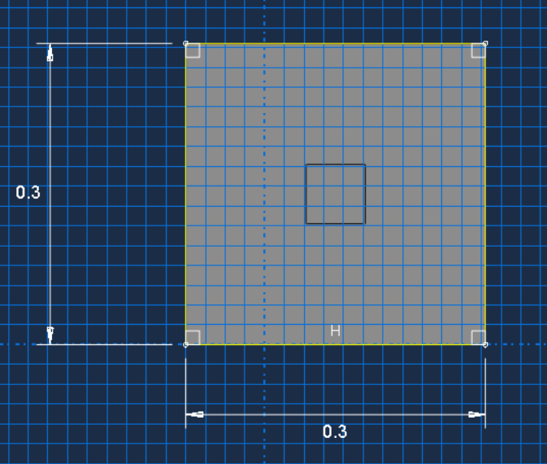
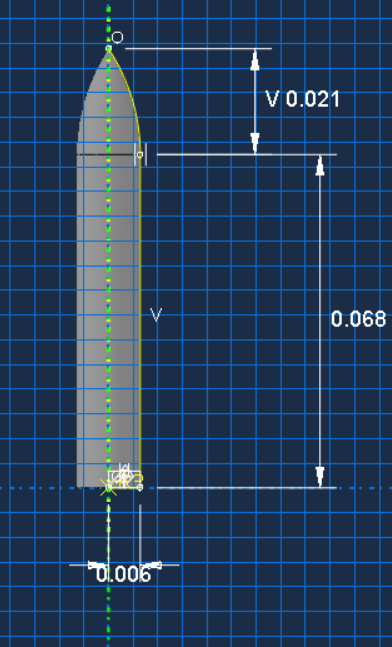
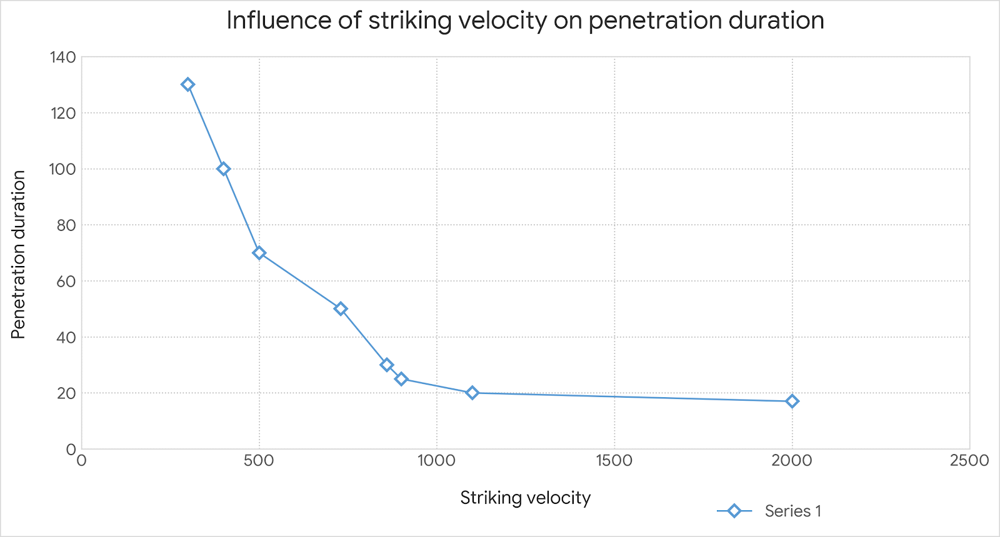
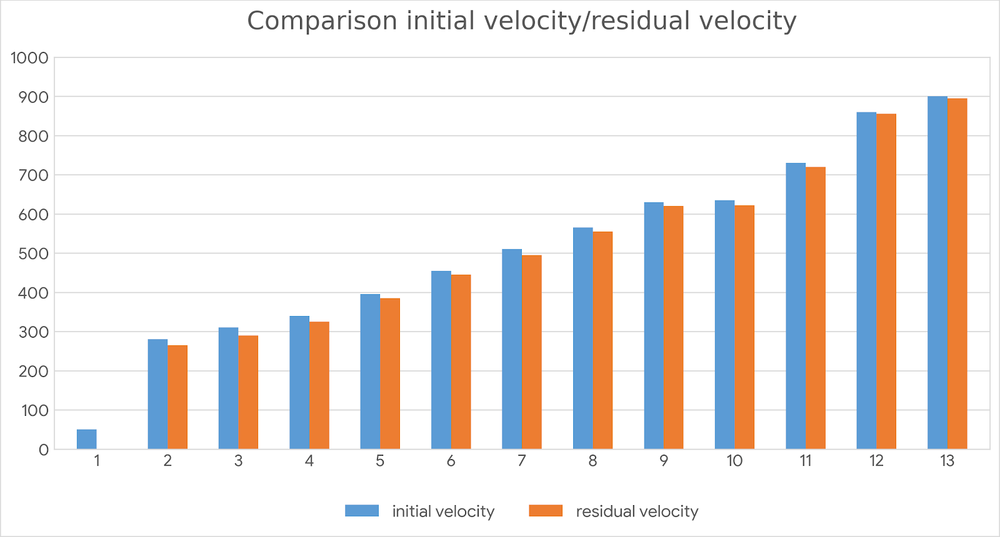

Bullet Impact Simulation on Aluminum Alloy
Yearly project: a high-velocity impact simulation, evaluating the residual velocity of a projectile after striking an aluminum plate.
- Yearly Project
- Abaqus/Explicit
- AL-6061-T651
- C3D8RT
Material Properties
Setup
Simulated the high-velocity impact of a projectile on an AL-6061-T651 plate in Abaqus/Explicit, using C3D8RT elements with the plate clamped on all four lateral faces and the projectile fired directly into the structure. The plate was tested across a range of impact velocities from roughly 280 to 900 m/s, evaluating both the projectile's residual velocity after impact and the time it took to penetrate the plate at each speed. Results showed a strong nonlinear relationship: penetration time drops sharply as impact velocity increases from around 300 m/s, then levels off past roughly 900 m/s. At the lowest velocities tested, the projectile was fully stopped by the plate, showing no residual velocity, consistent with impacts near the plate's ballistic limit, while at higher velocities residual velocity tracked closely with initial velocity as the projectile fully perforated the target.
Objective



